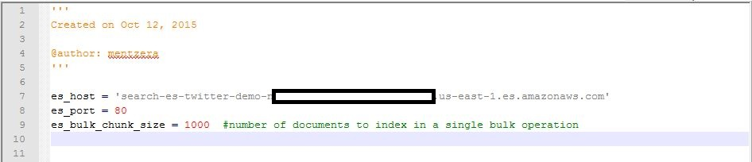

Notes on 'Building a Near Real Time Discovery Platform'
Assaf Mentzer from AWS put together a very useful learing project in November of 2015, 'Building a Near Real-Time Disovery Platform with AWS'.
Since then there seem to have been a few changes in some of the AWS services he used. This page updates Assaf's instructions and adds a few additional tips for anyone getting started with the project. These steps are fairly complete, but they are a suplement, and not a replacement, for Assaf's work. I hope it helps others with the demo.
Prerequisites
No real changes here. The only note is to consider using a new Twitter account instead of your usual one (if you have one) so as not to confuse your usual settings with these data explorations.
Create Amazon Elasticsearch Service cluster
- Sign in to the Elastic Search Service Console.
- If this is your first time choose 'Get Started', otherwise choose 'Create a New Domain'.

- Name your domain “es-twitter-demo” and choose 'Next'.
- After naming the domain for your elasticsearch service Assaf recommends accepting the defaults on the next page. The defaults are reasonable, but it is a bit cheaper to use a smaller EC instance to host the elasticsearch domain. The t2.medium.elasticsearch works well for simple experimentation.
- Choose 'Allow Open Access' as the domain policy.
NOTE: This is a poor security practice and the console will complain about it.

- Choose 'Confirm and Create'. It takes about 10 minutes for the domain to be set up.
- When the endpoint is active, click on it.
- The service console will display various details about the newly created service endpoint. Note this information down for later, especially the Eleasticsearch service endpoint and the Kibana URL.

Create an IAM role for Firehose
- Create the two policy files that will be uploaded using the AWS command line client.
NOTE: On my system, cutting and pasting these lines from the original article introduced various hidden artifacts in the files that caused the upload to fail. If that happens on your system, just retype them. The syntax Assaf gives in the original article is correct.
- Edit the s3-rw-policy.json file to use your S3 bucket

- Use the AWS CLI client to upload the files.
- Check that the policy has been uploaded properly

Create a Lambda function
This section deviates from the original quite a bit. The outcome is the same, but the Lambda function setup and configuration process appears to have been updated.
- Download the deployment package and unzip to the s3-twitter-to-es-python folder.
- Modify the s3-twitter-to-es-python/config.py file. Edit the file so that the value of es_host matches Elasticsearch Service endpoint for your domain.

- Zip the folder content on your local environment as my-s3-twitter-to-es-python.zip
NOTE: It is important to zip the folder content not jut zip up the folder itself.
- Sign in to the Lambda console.
- Choose 'Create a Lambda function'.
NOTE: Choose 'Get started now' if this is your first time using Lambda.
- Choose 'Configure triggers' from the list of choices at top left of the screen.

- Click inside the dotted lines and choose the S3 source from the drop down list.

- Enter your bucket name and be sure the 'Enable trigger' box is checked.

- On the next screen select:
- Name: 's3-twitter-to-es-python'
- Runtime: 'Python2.7'
- Code entry: 'Upload a .ZIP file' (Click the button to upload the .zip created a few steps ago.)
- Handler: 'lambda_function.lambda_handler'
- Role: 'Create new role from templates(s)'
- Role name: lamdba_s3_exec_role'
- Memory: 128
- Timeout: 2 minutes
- Create the function
- Verify the role was created properly
- Verify the S3 bucket has permissions set properly

Feed the producer with Twitter streaming data
Using the suggested t2.micro instance works well for the node.js host. There aren't any updates to the configuration steps, but be aware that the stock configuration file is limited to US data and it only sends a few of the available fields from the Twitter stream. When starting out it is probably best to stick with the standard configuration for the demo. If you want to change the data streams later on, here are some tips on how to do it."
Add countries outside the US to the stream
This sends a LOT of data for the demo to process.
- Go to the node.js host.
- Change directory to twitter-streaming-firehose-nodejs.
- Edit config.js to comment out the regional filter.
- Restart the node server.
Add new fields to the stream
You can increase the amount of data collected in each Tweet by modifying the Lambda Function. Here's how:
- Go to the s3-twitter-to-es-python directory.
- Edit tweet_utils.py to add additional fields in the get_tweets() function.
- Rob Johnson has compiled a list of available fields.
- Zip up the directory again
- Go to your function in the Lambda Management console.
- Upload the new .zip file. It will replace the old function.
- Go to the monitoting tab.
- Click on 'View logs in CloudWatch' to verify the new function works properly. These logs are very useful to debug any errors in the python script.

Add new indices to Kibana
It may be useful to add another index to segregate your information streams. You can do it like this:
- Go to the s3-twitter-to-es-python directory.
- Edit twitter_to_es.py to update the index name.
- Zip up the directory again
- Go to your function in the Lambda Management console.
- Upload the new .zip file. You will see the new index listed on the 'Indices' tab for for ElasticSearch domain.
Discover and analyze data
The data is transfered to the S3 bucket every 5 minutes or when it reaches a particular amount. You should start to see data appearing in S3 soon. Once the first data appears there, the Lambda function should process it. The first itteration should happen in about five minutes. If not, first verify that data is being written to S3. Then check that the S3 bucket permissions are correct for reading. It is ok to open the bucket to be world readable since it only holds publically available data.
When ElasticSearch confirmed your domain above the Kibana URL was created. The URL won't return anything until after the Lambda function has processed the first set of data. Once that happens you are free to explore!
Happy tweet prospecting!